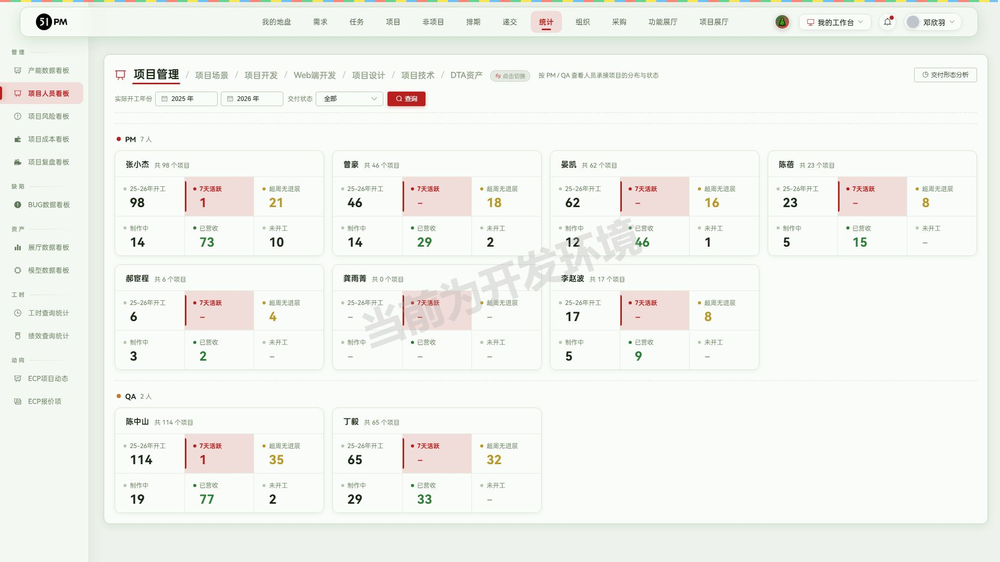
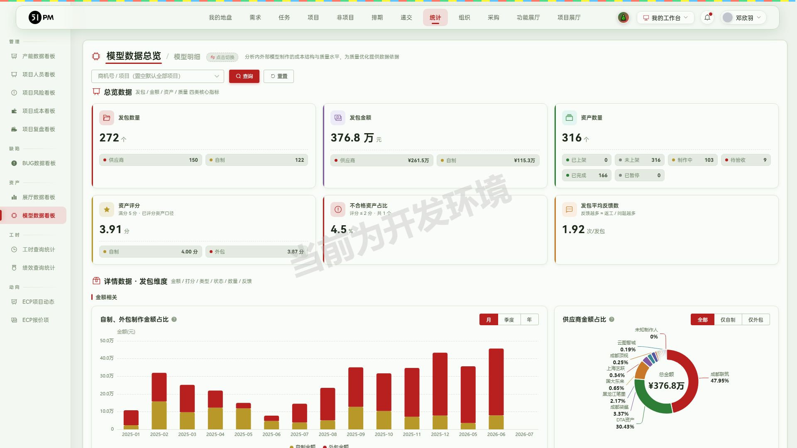
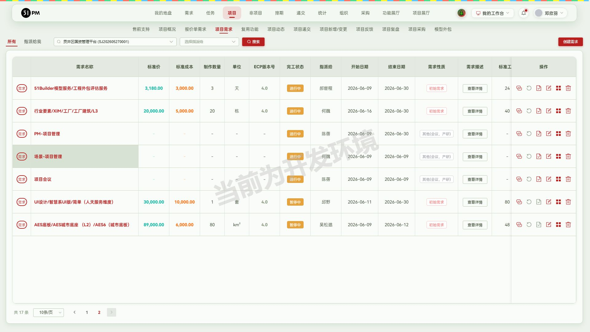
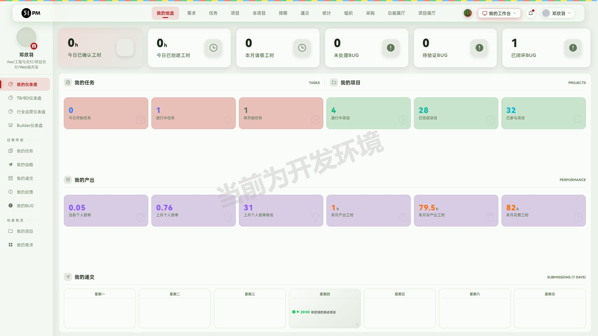
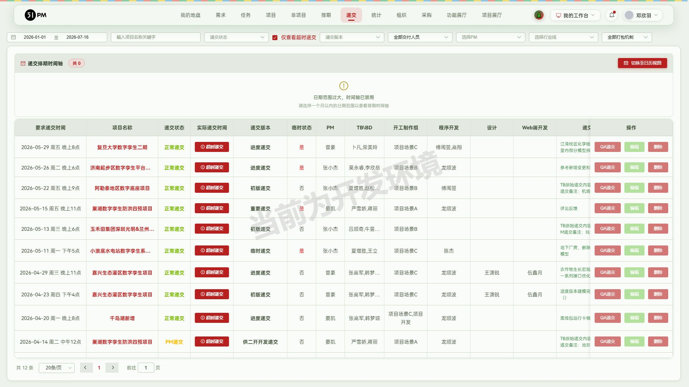

npx playwright test 全量只读回归：23 通过 / 4
失败 / 1 跳过（@write），总耗时 2.9m。
4 个失败全部命中「测试库刷新致数据缺失」铁律（按规不重建、不复跑）：
| # | 用例 | 缺失数据 |
|---|---|---|
| 1 | v2.2.5 ③ 模型外包自制流程要素齐全 | 「V225copilot-自制发包复测」发包被清 |
| 2 | v2.2.6 ① 我的任务日历任务卡备注 | 测试账号本月日历无任务 |
| 3 | v2.2.6 ② 递交列表「提前递交」记录 | #6712 的 V2.2.6 验收递交记录消失 |
| 4 | v2.2.6 ③ 项目概况接口文档链接 | 定制/行业接口文档链接为 0 条 |
哨兵用例（已知 BUG 跟踪）均为预期失败=绿，无 unexpected pass，即历史 BUG 均未修复也未新增回归 BUG。
v2.2.8开发内容如下： 1.递交模块：下拉递交状态这儿没有超时递交 2.统计-项目成员看板（体现到发版）：项目管理加上测试的两位同事、项目场景-点项目场景A后出现对应组员、tab加上DTA资产和项目技术 3.递交审批：API版本缺少2.3.X 4.项目需求（体现到发版）：项目需求需要根据 任务最近结束日期 与当前系统日期 做对比，超过2周，需求自动转化为"暂停"状态（项目下的进行中的新增、变更、初始需求，如果两周之内没有新增任务并且没有填过工时就将需求状态改为暂停中） 5.统计-模型数据看板（体现到发版）：数据看板开发 6.我的工作台-UGA（体现到发版）：开放UGA入口
对应关系：需求 1 → §1，需求 2 → §2，需求 3 → §3，需求 4 → §4，需求 5 → §5，需求 6 → §6。标注「体现到发版」的 2/4/5/6 四项进入发版内容初稿。
is_over_tb_time=1 过滤，全年 415 条 →
12 条；取消勾选恢复全量project_publish/get_list?...&is_over_tb_time={v}——1→12
条、-1→415 条、99→0 条，均 200 无 5xx；⚠️
非法值 abc→403
条（介于两者之间，后端未校验非法枚举，见确认表 #2）/statistic/pm_paneldata_export/get_user_project?start_year=&end_year=&type={pm|dta|tech}
均 code 0；非法 type=abc、空 type → code 51 优雅报错无
5xx（项目场景维度取数走 tab 内缓存通道，未单独暴露 type）-）project_publish/get_normal_const 返回的 WDPAPI
枚举含 API2.3.x，code 0systemRole!=='PM'，预期门禁）；为验证表单内容通过
Vue 直调 approvedApply(row)
打开表单（标准手法，未提交任何数据）/project/demand?projectId=Ndoing 77 / done 8 / wait 29 / pause 9；9 条
pause 需求全部为任务停滞超 2 周的新增/初始需求（如
UI设计/智慧系UI版/简单（需求#47299）末次任务结束
06-30、AES底板/AES城市底座（需求#47289）末次任务结束 06-12，均距今超 2
周），符合自动转换口径demand/get_project_demand_list?project_id=N&limit=&page=
code 0，status 枚举 doing/done/wait/pause/statistic/outsource_panel；页头「模型数据总览 /
模型明细」切换outsource/get_data_overview（period/producer_scope/score_scope）非法
period、空参均兜底返全量 code 0；get_package_dimension_list
非法 status 返 0 条不报错；🐛
get_asset_dimension_list?limit=-5 → HTTP
500（slice bounds out of range [:-5]，见确认表
#6）window.open('http://10.2.13.121/entry?t=<oauthToken>&uid=475&from=51pm')，携带登录态与用户标识免二次登录跨功能/附带发现（明细已在各功能节「覆盖层-接口」行）：
| # | 发现 | 证据 | 建议 |
|---|---|---|---|
| 1 | outsource/get_asset_dimension_list 负数 limit 触发
500（slice panic） |
limit=-5 → HTTP 500
slice bounds out of range |
后端对分页参数加非负校验 |
| 2 | project_publish/get_list 的
is_over_tb_time 非法枚举不校验 |
abc → 返回 403 条（既非全量也非超时集） |
非法值应报 code 51 或按默认值处理 |
| 3 | UGA 跳转 URL 携带 oauthToken 明文 query | entry?t=<token>&uid= |
评估改为一次性 code 交换，避免 token 进日志/Referer |
| 4 | 「通过审批」前端禁用但 Vue 层方法可直调开表单 | approvedApply(row) 成功打开 | 后端确认审批提交接口有角色校验（本轮未提交，未验后端） |
未覆盖声明：①需求自动暂停的定时任务触发时机与工时排除条件未验（无后端任务观测手段）；②UGA 目标系统内部功能未验（越权范围）；③递交审批「通过审批，创建递交」提交链路未走（避免对真实申请单产生审批数据）；④模型看板图表数值与底层明细的逐图核对仅抽样（发包数/金额两项全核对）。
接口回归用例沉淀：见 regression/tests/api-v2.2.8.spec.js（阶段 3 产物）。
| # | 事项 | 建议 |
|---|---|---|
| 1 | 超时递交筛选结果含 2 条实际递交早于要求时间的记录：千岛湖新增（递交#14076，早 2h）、巢湖数字孪生防洪四预项目（递交#14057，status=4 PM递交，早 1h） | 确认超时判定口径（是否按其他时间字段或 PM 递交特殊规则），若为误算需修 |
| 2 | is_over_tb_time=abc 返回 403 条 |
后端补参数校验 |
| 3 | 需求自动暂停的定时执行周期未知（每日？每小时？） | 与后端确认，便于回归用例设计 |
| 4 | 需求#56144（皖江项目#6708，新增类，末次任务结束 06-29 距今超 2 周）仍为「进行中」 | 人工核对该需求近两周是否填过工时——有则符合排除条件，无则为自动暂停漏网 |
| 5 | 模型看板资产状态四档（制作中103+待验收9+已完成166+已暂停0=278）≠ 资产总数 316，差 38 | 确认是否存在未展示的状态档（如未开工），需要则补档位 |
| 6 | get_asset_dimension_list 负数 limit 500 |
后端修复（同接口汇总表 #1） |
| 7 | UGA 跳转 token 明文 query | 安全评估（同接口汇总表 #3） |
本轮验收全程只读：所有弹窗（编辑递交信息、项目递交、转化为递交、申请递交）均打开查看后取消，未提交任何表单；筛选/翻页操作不落库。无新增测试数据。
强度中等，新增项目人员看板与模型数据看板，完善需求「暂停中」自动流转，开放UGA快捷入口。
需关注人员：PM、PMO、组长
1.「统计-项目人员看板」：（减少人工盘点各组项目负担，方便按人员跟踪项目推进） 支持按项目管理（PM/QA）、项目场景、项目开发、项目设计、项目技术、DTA资产等维度查看成员承接项目的分布与状态，每人展示开工、7天活跃、超周无进展、制作中、已营收、未开工六项指标； 「项目场景」维度以小组为单位展示项目场景A/B/C/D整体情况，点击场景名可下钻查看组内成员看板，支持按开工年份与交付状态筛选；

需关注人员：DTA、PM、PMO
2.「统计-模型数据看板」：（沉淀模型发包数据，量化内外部制作成本与供应商交付质量） 「模型数据总览」提供发包数量、发包金额、资产数量、资产评分四类核心指标，区分供应商与内部自制口径，并提供金额占比、供应商质量评分排行、发包类型状态占比、资产属性质量、省份热力分布、评分档位分布等图表； 「模型明细」支持发包维度与资产维度切换，展示每笔发包的评分、反馈数、制作日报、预估/报价人天、金额与交付时间明细，支持按自制/外包等条件筛选；

需关注人员：PM、组长、TB\BD
3.「项目需求-暂停中状态自动流转」：（及时暴露停滞需求，保证需求进度与产能统计准确） 项目下进行中的新增、变更、初始需求，若连续两周未新增任务且未填报工时，系统自动将需求状态转为「暂停中」； 需求列表完工状态列直接展示「暂停中」标识，方便识别停滞需求并及时跟进；

需关注人员：全员
1.「我的工作台-UGA入口」：支持从工作台菜单一键跳转UGA系统（正式与开发环境多入口），自动携带登录态免重复登录，方便快捷进入UGA开展工作；

需关注人员：QA、PM
2.「递交-超时递交筛选」：递交列表新增「仅查看超时递交」筛选项，支持一键过滤出超时递交记录，方便复盘递交超时情况；

需关注人员：PM、QA
3.「递交审批-API版本」：递交表单WDPAPI版本选项补充API2.3.x，保持与最新API发布节奏一致；
| 版本号 | 更新时间 | 核心更新内容 | 影响角色 |
|---|---|---|---|
| v2.2.8 | 2026-06-29 | 新增项目人员看板与模型数据看板，完善需求暂停机制，开放UGA入口 | 全员、PM、组长、DTA |